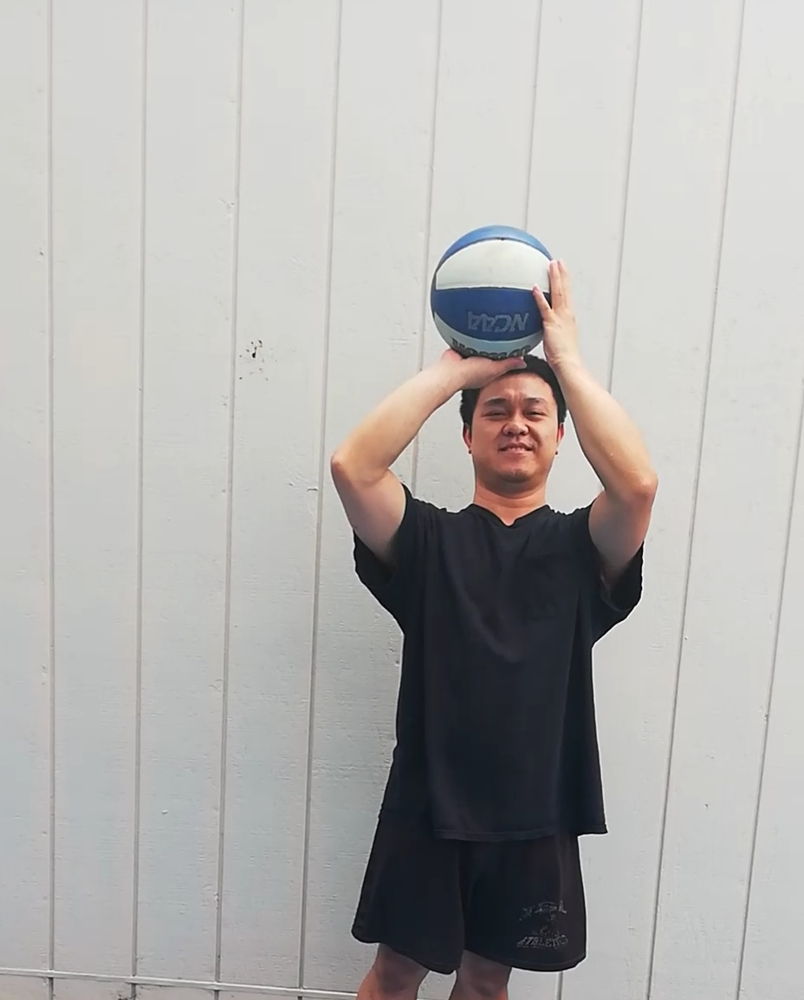
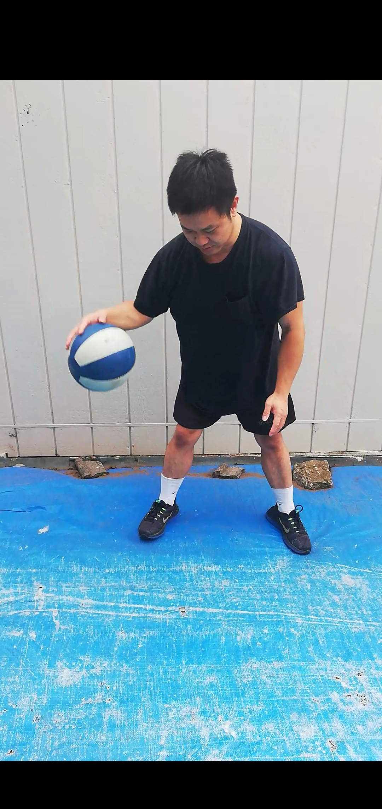
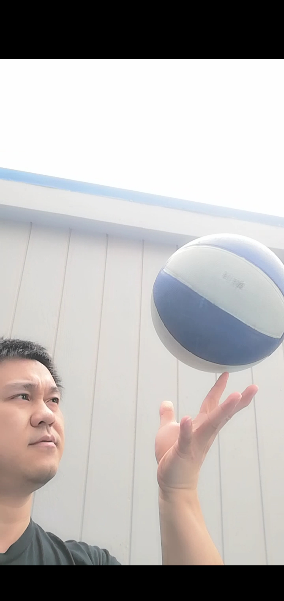
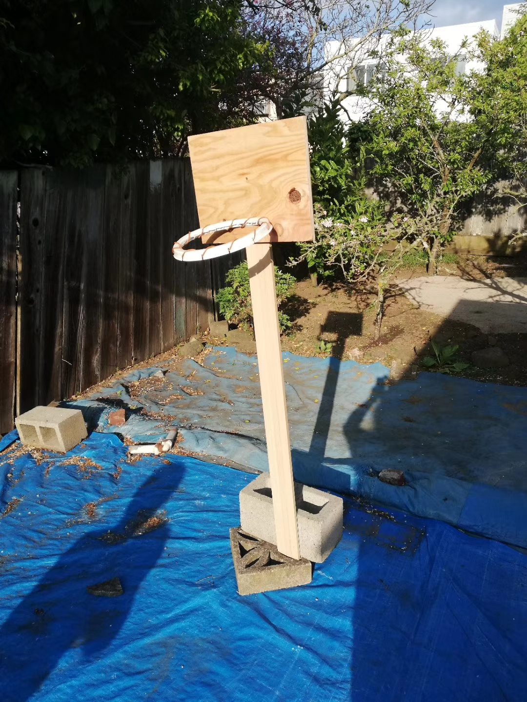
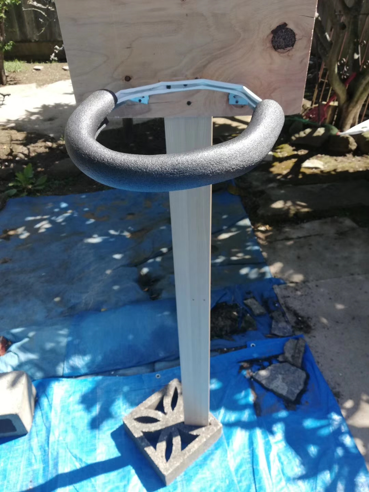
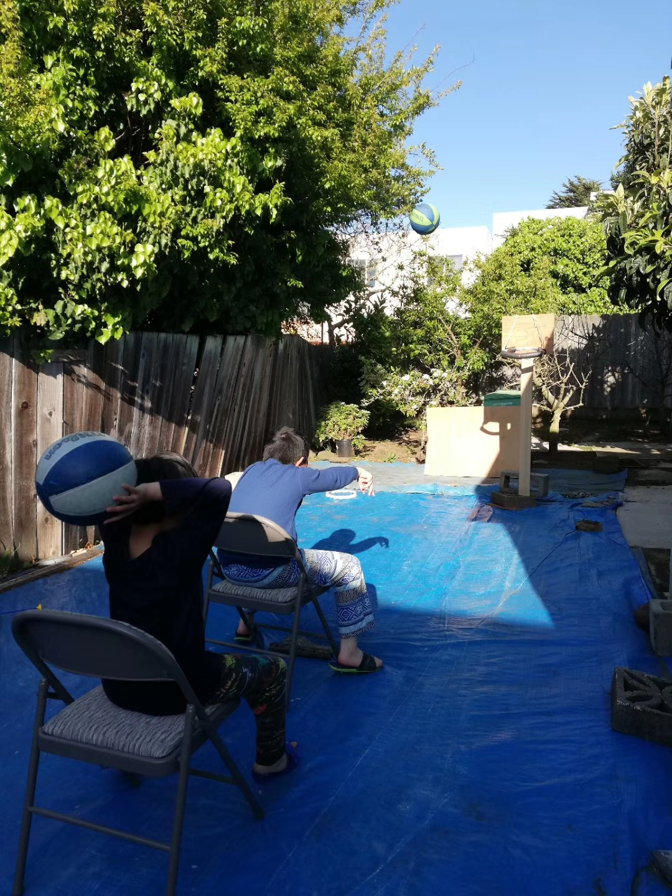

Hello visitors, welcome to my hobby page. Here you can ONLY find out one of my hobbies. If you want to know more about me, you have to visit my homepage often. My name is Kenny, the hobby I wanted to talk about is playing basketball. I like it because it requires me to move my whole body, improves my balance and coordination, and teaches me about being a good team player. Plus, I can just play it by myself , or with my friends, or with other 9 players if I am in a serious game. And here I want to share with you some of my own pictures.
 (Image 1)  (Image 2)  (Image 3)If you want to play basketball with others, you have to know and follow the game's rules. Here, I am going to cover some of the basic rules. Firstly, a player can play with the ball with one or two hands. Secondly, the player has taken more than 3 steps without the ball being dribbled, a traveling violation is called. Thirdly, you can not hit or injure another player intentionally. And lastly, practicing is the main key and the goal of playing basketball is to score more points than your opponent's team.
There are other online resources you can check them out, so you can have a better understanding of the rules, and explore more in the basketball field. Wikipedia covers a lot of different aspects of basketball, such as its history, rules, strategies, and etc. And you can also check out how professional NBA players play, so you can understand more and try to learn some technique from them.
If those pictures do not excite you, you can also check out the NBA Channel on Youtube. I hope you can find some tips, trick, and excitements there.
As of today, in year 2020, people are suffering from the COVID-19 pandemic. It is so hard for us to go out to play and socialize. Considering health and safety, I do not want to go out and practice during this time. Interesting enough, I have DIY a basketball hoop in my backyard. It allows me, even my family members, to practice and excercise together. Stay healthy and play basketball with me next time!
  